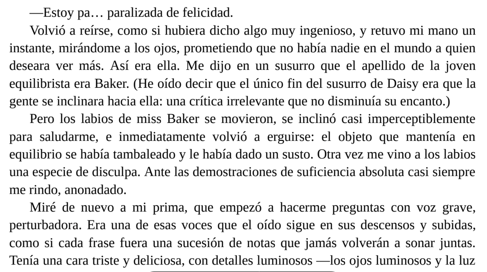
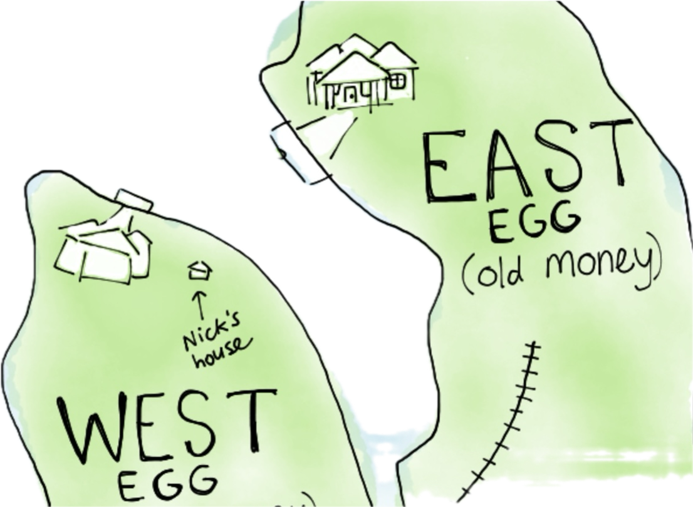

Felicidades engañosas

"Cuantos probaron este fruto, dulce como la miel, ya no querían llevar noticias ni volverse; antes deseaban permanecer con los lotófagos, comiendo loto, sin acordarse de volver a la patria."

Odisea, IX
New York / East - West Island
